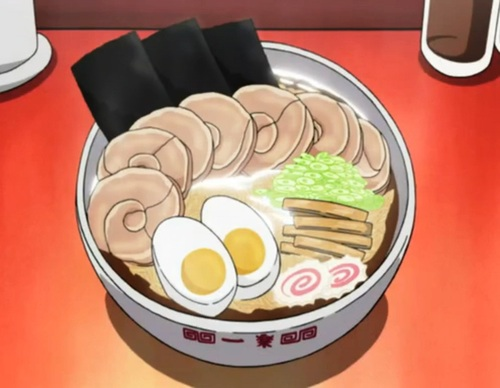
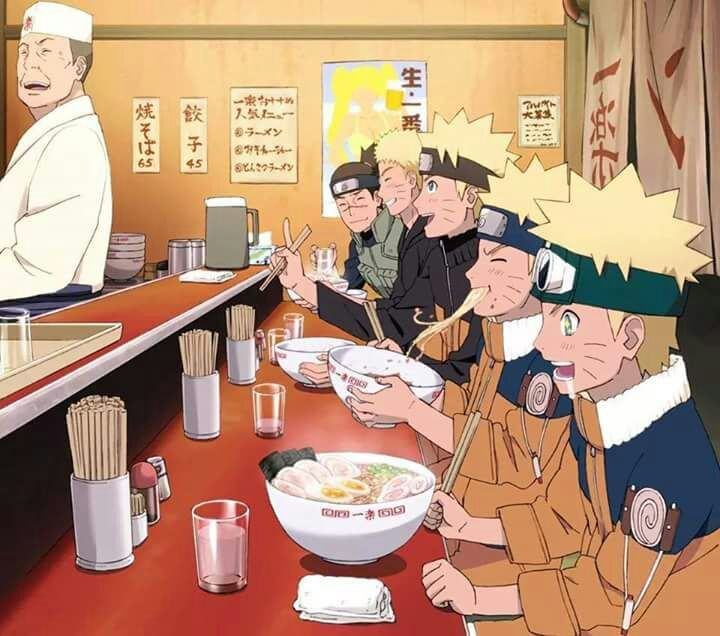

main page
Ichiraku Ramen

Ichiraku Ramen from Naruto
Ingredients
- Two packs of ramen noodles of your choice
- 5 cups of pork or beef broth
- Pork Tenderloin
- 2 Eggs
- 1 Baby bok choy
- 1 Green onion
- Soy Sauce
- Aburage x5
- Nori
- Kamaboko x3
Steps
- Preheat your stove to 450 degrees. From there, start to cook the pork tenderloin for 10-15 minutes, or until it's well done
- Make a pot of water and place your two eggs in the pot with enough water to submerge them. It should take about 10 minutes to hard boil the eggs. Take them out and place them in cold water when tehy are done.
- Next, pour in the 5 cups of broth and let it simmerö. you can add soy sauce or your own custom ingredients as well
- Once the broth begins to simmer, add the ramen noodles. DO NOT add any flavor packets. The noodles have to cook first.
- Now, it's time to prepare the toppings. Peel the eggs and slick them in half. What you do with the rest is upto you. Then, neatly slice the pork tenderloin, kamaboko, bok choy, aburage and green onion into thin slices
- When the noodles are done cooking, place the broth in a deep bowl and the noodles next. Then, place all of the gingredients in groups abovce the noodles until it looks neat.
Happy eating!
